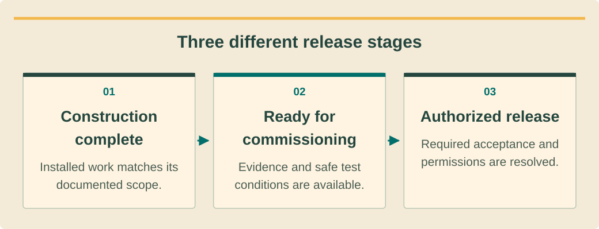

Installation fieldcraftעבודת התקנה מקצועיתทักษะงานติดตั้งภาคสนาม · 8 / 9
Pre-commissioning inspection and handoverבדיקה לפני הפעלה ומסירהตรวจก่อนทดสอบและส่งมอบ
Make readiness an evidence-based release decision.להפוך מוכנות להחלטת שחרור מבוססת ראיות.ให้ความพร้อมเป็นการปล่อยงานตามหลักฐาน.
What you will be able to doמה תדעו לעשותสิ่งที่คุณจะทำได้
- Separate construction completion from energization release.להפריד גמר התקנה משחרור מתח.แยกงานก่อสร้างเสร็จกับปล่อยจ่ายไฟ.
- Build a useful defect and evidence register.לבנות רשם ליקויים וראיות שימושי.ทำทะเบียนข้อบกพร่องและหลักฐานใช้ได้.
- Transfer responsibility clearly to commissioning.להעביר אחריות להפעלה בבירור.ส่งต่อความรับผิดชอบทดสอบชัดเจน.
Readiness has stagesלמוכנות יש שלביםความพร้อมมีขั้น
Mechanical completion means the documented installation work is finished. Commissioning readiness means the required evidence and safe test conditions are available. Permission to energize is a separate authorized decision. Avoid combining these into a single “done” status that hides unresolved electrical or regulatory conditions.גמר מכני פירושו עבודת התקנה מתועדת שהושלמה. מוכנות להפעלה פירושה ראיות ותנאי בדיקה בטוחים. חיבור מתח הוא החלטה מורשית נפרדת. אין לאחד ל״הושלם״ שמסתיר תנאים חשמליים או רגולטוריים פתוחים.งานกลเสร็จหมายถึงติดตั้งตามเอกสารครบ พร้อมทดสอบหมายถึงมีหลักฐานและสภาพทดสอบปลอดภัย สิทธิ์จ่ายไฟเป็นการตัดสินอนุญาตแยก อย่ารวมเป็นสถานะเสร็จเดียวที่ซ่อนเงื่อนไขไฟฟ้าหรือข้อกำหนดค้าง.
IEC 62446-1’s public scope connects documentation, inspection and commissioning of grid-connected PV. Use that structure to organize the package, while obtaining the applicable full procedures and project acceptance limits. A public scope page does not supply every test method or local approval requirement.היקף IEC 62446-1 מחבר תיעוד, בדיקה והפעלה של סולאר מחובר רשת. משתמשים במבנה לארגון התיק ומשיגים נהלים וגבולות פרויקט מלאים. עמוד היקף אינו מספק כל שיטת בדיקה או אישור מקומי.ขอบเขต IEC 62446-1 เชื่อมเอกสาร ตรวจ และทดสอบ PV ต่อกริด ใช้จัดแฟ้มพร้อมจัดหาวิธีเต็มและเกณฑ์โครงการ หน้าขอบเขตสาธารณะไม่ได้ให้ทุกวิธีหรือสิทธิ์ท้องถิ่น.
Inspect before testingלבדוק לפני מדידהตรวจสภาพก่อนทดสอบ
Review the installed layout, labels, cable support, enclosure completeness and specified protection against the drawings. Verify accessible isolation and the status of all temporary work. The purpose is to find visible mismatches before the commissioning team relies on the installation as its test object.משווים פריסה, תוויות, תמיכת כבלים, מעטפות והגנות לשרטוט. מאמתים בידוד נגיש ומצב עבודה זמנית. המטרה למצוא אי התאמות גלויות לפני שצוות ההפעלה מסתמך על ההתקנה כבסיס בדיקה.เทียบผังติดตั้ง ป้าย รองรับสาย ตู้ครบ และป้องกันกับแบบ ตรวจการเข้าถึงตัวตัดและงานชั่วคราวทั้งหมด เป้าคือพบสิ่งไม่ตรงก่อนทีมทดสอบใช้ระบบเป็นวัตถุทดสอบ.
Use location-linked photographs and records for concealed attachments and terminations. Where evidence is missing, mark it missing rather than inventing a successful result. A supervisor may require controlled reinspection; a neat photograph of the finished roof cannot prove the quality of hidden details.משתמשים בצילום ורישום לפי מיקום לעיגונים וחיבורים מוסתרים. ראיה חסרה מסומנת כחסרה, לא כתוצאה מוצלחת מומצאת. ממונה עשוי לדרוש בדיקה חוזרת; צילום גג גמור אינו מוכיח פרטים נסתרים.ใช้ภาพและบันทึกผูกตำแหน่งสำหรับจุดยึดและต่อซ่อน ถ้าหลักฐานขาดให้ระบุขาด ไม่แต่งผลผ่าน หัวหน้าอาจต้องตรวจซ้ำควบคุม ภาพหลังคาเสร็จสวยไม่พิสูจน์รายละเอียดซ่อน.
See the ideaרואים את הרעיוןมองเห็นแนวคิด
Three different release stagesשלושה שלבי שחרור שוניםสามขั้นปล่อยต่างกัน

Read the diagram as textקריאת התרשים כטקסטอ่านแผนภาพเป็นข้อความ
- Construction completeהתקנה הושלמהก่อสร้างเสร็จ — Installed work matches its documented scope.עבודה תואמת להיקף המתועד.งานตรงขอบเขตเอกสาร.
- Ready for commissioningמוכן להפעלהพร้อมทดสอบ — Evidence and safe test conditions are available.ראיות ותנאי בדיקה בטוחים זמינים.มีหลักฐานและสภาพทดสอบปลอดภัย.
- Authorized releaseשחרור מורשהปล่อยโดยผู้มีสิทธิ์ — Required acceptance and permissions are resolved.קבלה והרשאות נדרשות הושלמו.รับและสิทธิ์ที่ต้องใช้ครบ.
A defect needs a decisionליקוי דורש החלטהข้อบกพร่องต้องมีคำตัดสิน
Each defect entry should contain identifier, location, observation, consequence, owner and required acceptance evidence. Separate safety-critical release blockers from minor finish items using the responsible professional’s classification. Do not let a long list of cosmetic items dilute the visibility of one unresolved protective function.לכל ליקוי מזהה, מיקום, ממצא, השלכה, אחראי וראיית קבלה. מפרידים חסמי בטיחות מגמר לפי סיווג האחראי. רשימת קוסמטיקה ארוכה לא צריכה לטשטש פונקציית הגנה אחת שלא נפתרה.แต่ละข้อมีรหัส ตำแหน่ง สิ่งพบ ผลกระทบ เจ้าของ และหลักฐานรับ แยกตัวขวางปล่อยด้านความปลอดภัยกับงานผิวตามผู้รับผิดชอบจัดประเภท อย่าให้รายการสวยงามยาวกลบหน้าที่ป้องกันค้างหนึ่งอย่าง.
Close an item only when correction and verification are recorded. The person who performed the repair and the person authorized to accept it may differ. Preserve both actions and their dates; deleting the original issue removes useful history for later service and warranty questions.סוגרים רק כשמתועדים תיקון ואימות. המתקן והמאשר עשויים להיות שונים. שומרים שתי פעולות ותאריכים; מחיקת הבעיה המקורית מוחקת היסטוריה חשובה לשירות ולאחריות.ปิดเมื่อบันทึกแก้และยืนยัน ผู้ซ่อมกับผู้มีสิทธิ์รับอาจต่างคน เก็บทั้งการกระทำและวัน ลบปัญหาเดิมจะสูญประวัติที่มีค่าสำหรับบริการและประกัน.
Handover is usable informationמסירה היא מידע שימושיส่งมอบคือข้อมูลใช้ได้
Provide the current as-built drawings, equipment and serial register, applicable manuals, inspection records and open-issue list. Include approved configuration references and the planned test boundaries. The recipient should be able to trace any circuit or major component without guessing which drawing revision is current.מוסרים שרטוטי עדות, רשימת ציוד וסידוריים, מדריכים, בדיקות ונושאים פתוחים. כוללים הפניית הגדרות וגבולות בדיקה. המקבל צריך לעקוב אחר מעגל או רכיב בלי לנחש גרסה עדכנית.ส่งแบบติดตั้งจริง รายการอุปกรณ์และซีเรียล คู่มือ บันทึกตรวจ และข้อค้าง รวมอ้างอิงค่าอนุมัติกับขอบเขตทดสอบ ผู้รับควรตามวงจรหรือชิ้นหลักได้โดยไม่เดารุ่นแบบ.
Agree who holds responsibility during the transition and how the construction crew will respond to findings. Explain remaining limits to the property representative in plain language. An online course completion or customer signature does not replace the competent person’s release or the required utility process.מסכימים מי אחראי במעבר וכיצד צוות הביצוע יטפל בממצאים. מסבירים מגבלות לנציג הנכס בפשטות. השלמת קורס או חתימת לקוח אינן מחליפות שחרור גורם כשיר או תהליך חברת חשמל.ตกลงผู้รับผิดชอบช่วงส่งต่อและวิธีทีมก่อสร้างตอบข้อพบ อธิบายข้อจำกัดให้ตัวแทนอาคารเข้าใจ การจบออนไลน์หรือลูกค้าเซ็นไม่แทนปล่อยโดยผู้มีความสามารถหรือกระบวนการการไฟฟ้า.
Worked exampleדוגמה פתורהตัวอย่างพร้อมวิธีทำ
An almost-finished villaוילה כמעט גמורהวิลล่าเกือบเสร็จ
Invented case: the roof is complete, but one isolator label is missing and a protective-device discrepancy remains open.מקרה מדומה: הגג הושלם, אך תווית מנתק חסרה ופתוח פער התקן הגנה.กรณีสมมติ หลังคาเสร็จแต่ป้ายตัวตัดหนึ่งหายและอุปกรณ์ป้องกันยังคลาดเคลื่อน.
- Record construction progress without declaring release to energize.מתעדים התקדמות בלי להכריז שחרור מתח.บันทึกความคืบหน้าโดยไม่ประกาศปล่อยจ่ายไฟ.
- Assign owners and verification evidence for both issues.מקצים אחראים וראיות לשני נושאים.กำหนดเจ้าของและหลักฐานทั้งสองข้อ.
- Have the authorized lead resolve blockers and accept the package.המוביל המורשה פותר חסמים ומקבל תיק.ให้ผู้นำที่มีสิทธิ์แก้ตัวขวางและรับแฟ้ม.
A visible roof milestone can coexist with a commissioning hold.אבן דרך בגג יכולה להתקיים לצד עצירת הפעלה.งานหลังคาถึงเป้าหมายได้ขณะที่ยังพักทดสอบ.
Your turnעכשיו מתרגליםถึงเวลาฝึกฝน
Missing recordרישום חסרบันทึกหาย
Invented exercise: an inspection form contains a blank result, but the installer says the test was probably performed last week. The client wants the handover today.תרגיל מדומה: בטופס בדיקה תוצאה ריקה והמתקין אומר שכנראה נבדק בשבוע שעבר. הלקוח רוצה מסירה היום.แบบฝึกสมมติ แบบตรวจเว้นผลว่าง ช่างบอกน่าจะทดสอบสัปดาห์ก่อน ลูกค้าต้องการส่งมอบวันนี้.
- Write the honest status.לכתוב מצב אמין.เขียนสถานะตามจริง.
- Define the evidence recovery path.להגדיר מסלול השלמת ראיה.กำหนดทางกู้หลักฐาน.
Compare with the model answerהשוו לפתרון לדוגמהเปรียบเทียบกับแนวคำตอบ
Mark the result unverified and seek the original traceable record. If unavailable, the commissioning lead determines an authorized repeat verification with suitable conditions. Do not backfill a pass from memory; show the resulting release status and responsible owner to the client.מסמנים לא מאומת ומחפשים רישום מקורי עקיב. אם חסר, מוביל הפעלה קובע בדיקה חוזרת מורשית בתנאים מתאימים. לא משלימים ״עבר״ מזיכרון; מציגים ללקוח מצב שחרור ואחראי.ระบุยังไม่ยืนยันและหาบันทึกต้นฉบับที่ตามได้ ถ้าไม่มีให้หัวหน้าทดสอบกำหนดตรวจซ้ำที่อนุญาตในสภาพเหมาะ ห้ามเติมผ่านจากความจำ แสดงสถานะปล่อยกับเจ้าของให้ลูกค้า.
Your exercise notebookמחברת התרגול שלכםสมุดแบบฝึกหัดของคุณ
Write your reasoning and the evidence you would collect. Notes stay in this browser. Export a copy to share with your trainer.כתבו את דרך החשיבה ואת הראיות שתאספו. המחברת נשמרת בדפדפן הזה. הורידו עותק כדי להעביר לבדיקה של אחראי ההדרכה.เขียนเหตุผลและหลักฐานที่จะรวบรวม บันทึกเก็บในเบราว์เซอร์นี้ ส่งออกสำเนาเพื่อส่งให้ผู้ฝึกสอนตรวจ
Before handing overלפני שמעבירים הלאהก่อนส่งมอบงาน
- As-built and equipment records agree.עדות ורישום ציוד תואמים.แบบจริงกับรายการตรงกัน.
- Critical holds closed with evidence.חסמים קריטיים נסגרו בראיות.ปิดตัวขวางสำคัญด้วยหลักฐาน.
- Release authority identified.סמכות שחרור מזוהה.ระบุผู้มีสิทธิ์ปล่อย.
Watch and applyצופים ומיישמיםดูแล้วนำไปใช้
A professional demonstrationהדגמה מקצועיתการสาธิตจากผู้เชี่ยวชาญ
Before pressing playלפני שמפעיליםก่อนกดเล่น
Notice how the solar workflow separates installation, commissioning and later maintenance.שימו לב להפרדת התקנה, הפעלה ותחזוקה מאוחרת בתהליך.ดูการแยกติดตั้ง ทดสอบ และบำรุงภายหลัง.
Tools and Techniques for Commissioning and Maintaining PV Systems
English webinar presented by Fluke Solar Application Specialist Will White, hosted by Test Equipment Depot. Covers measurement categories, commissioning and O&M. US examples and demonstrated procedures require local and model-specific review.וובינר באנגלית של מומחה הסולאר ב-Fluke, Will White, באירוח Test Equipment Depot. עוסק בקטגוריות מדידה, הפעלה ותחזוקה. דוגמאות אמריקאיות ונהלים מחייבים בדיקת תחולה מקומית ודגם.เว็บบินาร์ภาษาอังกฤษโดย Will White ผู้เชี่ยวชาญโซลาร์ Fluke จัดโดย Test Equipment Depot ครอบคลุมประเภทวัด ทดสอบส่งมอบ และ O&M ตัวอย่างสหรัฐฯ และวิธีต้องตรวจท้องถิ่นกับรุ่น.
Connect it to this lessonמחברים לחומר בשיעורเชื่อมกับบทเรียนนี้
A test result needs the right method and traceable acceptance evidence.תוצאת בדיקה דורשת שיטה וראיית קבלה עקיבה.ผลทดสอบต้องวิธีถูกและหลักฐานรับตามรอยได้.
Pause and explainעוצרים ומסביריםหยุดแล้วอธิบาย
Which missing record would prevent a green dashboard from becoming technical acceptance?איזה רישום חסר ימנע מלוח ירוק להפוך לקבלה טכנית?บันทึกใดขาดทำให้แดชบอร์ดเขียวไม่เป็นการรับเทคนิค?
The guidance is available in all three languages. The video keeps the publisher’s original audio; captions and translations depend on the publisher and YouTube. If the embedded player is unavailable, use the source link.הנחיות הצפייה זמינות בשלוש השפות. הסרטון נשאר בשפת המקור; כתוביות ותרגום תלויים במפרסם וב־YouTube. אם הנגן אינו זמין, פתחו את קישור המקור.คำแนะนำมีครบสามภาษา วิดีโอใช้เสียงต้นฉบับ คำบรรยายและการแปลขึ้นกับผู้เผยแพร่และ YouTube หากเครื่องเล่นใช้ไม่ได้ให้เปิดลิงก์ต้นฉบับ
Check your understanding · 80% to passבדיקת הבנה · ציון מעבר 80%ตรวจความเข้าใจ · ผ่านที่ 80%
Sources and review datesמקורות ותאריכי בדיקהแหล่งข้อมูลและวันที่ตรวจสอบ
- IEC 62446-1 commissioning/documentation scope
Public scope for PV commissioning, inspection and documentation; obtain applicable full procedures and limits.היקף ציבורי להפעלה, בדיקה ותיעוד סולאר; נדרשים נהלים וגבולות מלאים החלים בפרויקט.ขอบเขตสาธารณะสำหรับทดสอบ ตรวจ และจัดเอกสาร PV ต้องใช้ขั้นตอนและเกณฑ์ฉบับเต็มที่เกี่ยวข้อง
- Installation and commissioning lifecycle guidance
US federal good-practice guidance; apply local engineering and manufacturer requirements in Thailand.הנחיות מקצועיות פדרליות מארה״ב; בתאילנד יש ליישם תכנון מקומי והוראות יצרן.แนวปฏิบัติจากหน่วยงานสหรัฐฯ งานในไทยต้องใช้วิศวกรรมท้องถิ่นและข้อกำหนดผู้ผลิต
- PV and energy-storage O&M best practices
Historic 2018 PV/storage O&M guide; not current Thai law or a substitute for equipment manuals.מדריך תחזוקת סולאר ואגירה משנת 2018; אינו חוק תאילנדי עדכני או תחליף למדריכי ציוד.คู่มือบำรุงรักษา PV/กักเก็บปี 2018 ไม่ใช่กฎหมายไทยปัจจุบันหรือคู่มืออุปกรณ์แทน
- PEA interconnection regulatory index
Official Thailand interconnection document index; confirm the applicable notice and project approval, not a universal rule.אינדקס רשמי של מסמכי חיבור בתאילנד; יש לאמת הודעה ואישור פרויקט מתאימים, לא כלל אחיד.ดัชนีข้อกำหนดเชื่อมต่อทางการของไทย ต้องยืนยันประกาศและอนุมัติเฉพาะโครงการ ไม่ใช่กฎเดียวทุกกรณี
Reading and quizzes build knowledge. Field work and practical sign-off require the responsible qualified professional.קריאה וחידונים בונים ידע. עבודת שטח ואישור כשירות מעשית נעשים בהנחיית בעל המקצוע המוסמך והאחראי.การอ่านและแบบทดสอบสร้างความรู้ งานภาคสนามและการรับรองความสามารถปฏิบัติต้องอยู่ภายใต้ผู้เชี่ยวชาญที่มีคุณสมบัติและรับผิดชอบ